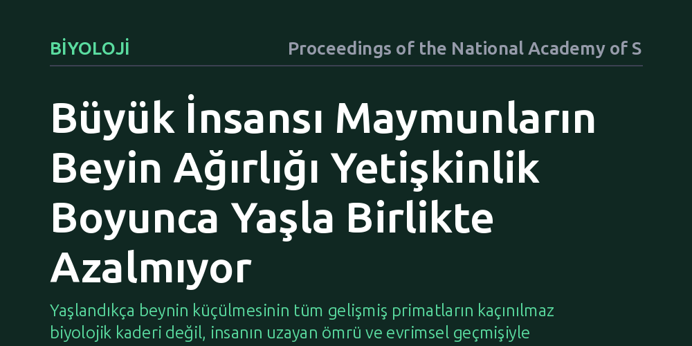

BIYOLOJI · Proceedings of the National Academy of Sciences · 2026-10-17
Araştırmacılar, insanlarda yaşlanmayla belirginleşen beyin küçülmesinin büyük insansı maymunlarda da görülüp görülmediğini yetişkin bireylerin beyin ağırlıklarını inceleyerek araştırdı. Bulgular, büyük insansı maymunlarda yetişkinlik boyunca yaşa bağlı bir beyin ağırlığı kaybı olmadığını ve bu küçülmenin insana özgü olabileceğini gösterdi.
Yaşlandıkça beynin küçülmesinin tüm gelişmiş primatların kaçınılmaz biyolojik kaderi değil, insanın uzayan ömrü ve evrimsel geçmişiyle bağlantılı istisnai bir durum olduğunu gösterir.

İnsan beyni yaşlandıkça belirgin bir değişim geçirir. Herhangi bir nörolojik hastalık ya da patoloji bulunmasa dahi, ilerleyen yaşla birlikte beyin dokusunda kayıplar meydana gelir ve toplam beyin hacmi ile ağırlığında ölçülebilir bir azalma görülür. Bu küçülme, uzun yıllar boyunca yaşlanma sürecinin tüm gelişmiş memeliler için kaçınılmaz ve evrensel bir biyolojik sonucu olarak kabul edildi.
Ancak bu durum temel bir evrimsel soruyu gündeme getiriyor: Yaşlandıkça beynin ufalması primat soy hattının ortak bir mirası mıdır, yoksa insanın olağanüstü uzayan yaşam süresiyle birlikte ortaya çıkmış istisnai bir bedel midir? En yakın akrabalarımız olan şempanze, goril ve orangutan gibi büyük insansı maymunların bu süreci nasıl deneyimlediğini bilmek, insan beyninin evrimini ve nörodejeneratif hastalıklara neden bu kadar yatkın olduğumuzu anlamak için kritik bir eşiktir.
Araştırmacılar bu soruyu yanıtlamak için büyük insansı maymun türlerinin yetişkinlik dönemindeki beyin ağırlığı verilerini mercek altına aldı. İnsanlarda yapılan geçmiş manyetik rezonans görüntüleme ve otopsi çalışmaları, beynin yetişkinlik boyunca nasıl hafiflediğini net biçimde ortaya koymuştu; bu çalışmada ise benzer bir iz sürülerek farklı yaş gruplarındaki büyük insansı maymunların beyin ağırlıkları karşılaştırmalı olarak analiz edildi.
Yöntem, geniş bir yaş aralığına yayılan bireylerin verilerini bir araya getirerek yaş ile beyin kütlesi arasındaki olası ilişkiyi test eden gözlemsel bir yaklaşıma dayanıyor. Hayvanların yaşam süreleri boyunca beyinlerinde zamanla bir küçülme yaşanıp yaşanmadığı, türler arasındaki morfolojik farklılıklar ve vücut boyutları da hesaba katılarak değerlendirildi.
Analiz sonuçları, insan ile büyük insansı maymunlar arasında çarpıcı bir biyolojik ayrışmaya işaret ediyor. İnsan beyni belirli bir yaştan sonra düzenli olarak kütle kaybederken, büyük insansı maymunlarda yetişkinlik dönemi boyunca beyin ağırlığında yaşa bağlı anlamlı bir düşüş tespit edilmedi. Diğer bir deyişle, büyük insansı maymunlar yaşlansalar dahi beyin kütlelerini yetişkinlik seviyesinde korumayı sürdürüyor.
Bu bulgu, daha önce rhesus şebekleri gibi diğer primatlarda elde edilen ve beyin ağırlığının yaşla azalmadığını gösteren sonuçlarla da örtüşüyor. Böylece primat familyasında genel bir kural sanılan 'yaşlandıkça beynin küçülmesi' olgusunun, büyük insansı maymunlarda dahi geçerli olmadığı, insan dışındaki primatların sağlıklı yaşlanma sürecinde beyin boyutlarını kaybetmedikleri netlik kazandı.
Elde edilen bulgular, yaşa bağlı beyin atrofisinin insan evriminde sonradan ortaya çıkmış, türe özgü bir olgu olduğunu gösteriyor. İnsanlar, diğer tüm insansı maymunlardan çok daha uzun bir yaşam süresine ve metabolik olarak son derece maliyetli devasa bir beyne sahip olacak şekilde evrimleşti. Makalede belirtildiği gibi, "Hastalıkların yokluğunda bile insan beyni, genel beyin boyutunda bir azalmanın belirginleştiği yaşa bağlı yapısal değişimlerle karakterizedir." Ancak akrabalarımızda bu küçülmenin olmaması, insanın uzayan ömrünün nöronal devreler üzerinde benzersiz bir aşınma yarattığını düşündürüyor.
Bu durum, insanın neden Alzheimer gibi yaşa bağlı nörodejeneratif hastalıklara neredeyse tek başına yakalandığı sorusuna da ışık tutabilir. İnsan beyni, diğer büyük insansı maymunların biyolojik sınırlarının çok ötesinde bir süre boyunca çalışmak zorunda kalmakta ve bu aşırı uzun maraton, doku kaybını kaçınılmaz hale getirebilmektedir. Akrabalarımızın beynini koruyan mekanizmaları anlamak, kendi yaşlanma sürecimize dair yeni bakış açıları sunabilir.